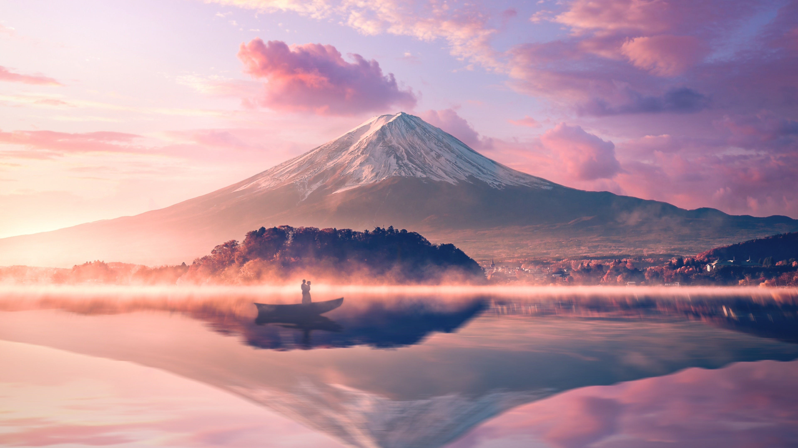

NO
Nama Tempat
Lokasi
Deskripsi
Foto


NO |
Nama Tempat |
Lokasi |
Deskripsi |
Foto |
| 1 | Tokyo Tower | Tokyo Tower berlokasi di 4 Chome-2-8 Shibakoen, Minato City, Tokyo 105-0011, Jepang. Terletak di distrik Shiba-koen, menara oranye-putih setinggi 332,6 meter ini mudah diakses dengan berjalan kaki 5-10 menit dari Stasiun Akabanebashi (Oedo Line), Stasiun Kamiyacho (Hibiya Line), atau Stasiun Onarimon (Mita Line). | Tokyo Tower adalah menara komunikasi dan observasi ikonik setinggi 333 meter di Minato, Tokyo, yang selesai dibangun tahun 1958. Berwarna oranye dan putih, menara baja ini terinspirasi dari Eiffel Tower dan menawarkan pemandangan kota dari Main Deck (150m) dan Top Deck (250m), serta memiliki kompleks perbelanjaan Foot Town di dasarnya. | |
| 2 | Mount Fuji | Mount Fuji berlokasi di prefektur Shizuoka dan Yamanashi, Jepang. Ini adalah gunung berapi aktif tertinggi di Jepang dengan ketinggian 3,776 meter di atas permukaan laut. | Mount Fuji, atau Fuji-san, adalah gunung berapi aktif tertinggi di Jepang dengan ketinggian 3.776 meter. Terletak di perbatasan antara prefektur Shizuoka dan Yamanashi, gunung ini merupakan ikon budaya dan spiritual Jepang, sering digambarkan dalam seni dan sastra, serta menjadi tujuan populer untuk pendakian dan wisata. |  |
| 3 | Tokyo Sky Tree | Tokyo Skytree berlokasi di 1 Chome-1-2 Oshiage, Sumida City, Tokyo 131-0045, Jepang. Terletak di distrik Oshiage, menara setinggi 634 meter ini mudah diakses dengan berjalan kaki 5 menit dari Stasiun Oshiage (Skytree Line, Hanzomon Line, Asakusa Line) atau Stasiun Honjo-Azumabashi (Tobu Skytree Line). | Tokyo Skytree adalah menara komunikasi dan observasi setinggi 634 meter di Sumida, Tokyo, yang selesai dibangun tahun 2012. Menjadi struktur tertinggi di Jepang dan kedua tertinggi di dunia, menara ini menawarkan pemandangan spektakuler dari dek observasi Tembo Deck (350m) dan Tembo Galleria (450m), serta memiliki pusat perbelanjaan dan akuarium di dasarnya. |